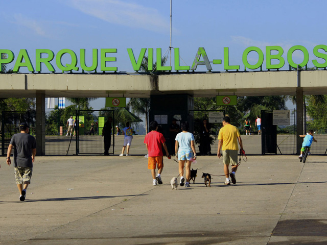

História do bairro
O Alto da Lapa foi construido na década de 1920 pela companhia city, a compania foi fundada por uma união entre brasileiros, britânicos e franceses que queria investir na cidade de São Paulo, sendo resonsavel pela construção de grandes bairros, centros e prédios importantes de São Paulo.
Como é morar no Alto da Lapa?

O Alto da Lapa é um bairro majoritariamente residencial, apesar de ter também estabelecimentos comerciais. Parte significativa deste bairro é tombada, devido ao seu valor arquitetônico e histórico, uma vez que a região surgiu ainda na época do Brasil Colônia. É um ótimo lugar para se morar.
Este é um bairro muito bem localizado, estando próximo às marginais Pinheiros e Tietê. Além disso, possui fácil acesso tanto através de várias linhas de ônibus municipais e intermunicipais, como das linhas 7 e 8 da CPTM.
Morar no Alto da Lapa garante a oportunidade de viver em um dos bairros mais bonitos e arborizados da cidade de São Paulo. A cerca de 20 minutos do Alto da Lapa está o Parque Villa Lobos, ideal para contemplar ainda mais a natureza tão presente nos jardins, praças e árvores de calçada do bairro.

Na hora de fazer compras, os moradores possuem a Rua Cerro Corá, onde se concentram variados comércios, como padarias, farmácias, bancos, lojas de roupas e calçados, entre outros estabelecimentos. Ainda no quesito compras, o morador do Alto da Lapa pode usufruir do Shopping Center Lapa e do Shopping Villa Lobos. O bairro concentra algumas escolas particulares renomadas na cidade, como o colégioMarco Polo, Santa Clara e Santo Ivo. Nas proximidades também há escolas públicas e universidades, como a USP.
Outro destaque interessante do bairro é que viver no Alto da Lapa também é muito bom do ponto de vista gastronômico, já que o bairro conta com excelentes restaurantes, como Soggiorno e Brascatta Pizzaria que são referência entre os moradores.
Por se tratar de um bairro de alto padrão, o Alto da Lapa é muito seguro, contando com policiamento durante todo o dia, além de segurança privada, que geralmente é contratada pelos condomínios.
Este artigo foi escrito em 25/10/2022.